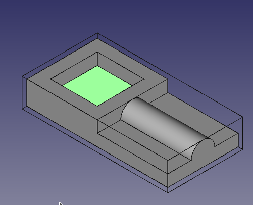

CAM: Obróbka kieszeni
 CAM: Obróbka kieszeni
CAM: Obróbka kieszeni
- Menu location
-
- Workbenches
- Default shortcut
-
None
- Introduced in version
-
-
- See also
-
None
Opis
Narzędzie  Obróbka kieszeni tworzy operację wycinania kieszeni z wybranych dolnych lub bocznych ścian jednej lub większej liczby kieszeni z obiektu bazowego zadania.
Obróbka kieszeni tworzy operację wycinania kieszeni z wybranych dolnych lub bocznych ścian jednej lub większej liczby kieszeni z obiektu bazowego zadania.
Obiekt CAM Pocket Shape jest dodawany jako część  Zadania CAM.
Zadania CAM.

Użycie
-
Wybierz dno lub ściany kieszeni. Zazwyczaj łatwiej jest wybrać dno, ale gdy kieszeń przechodzi na wylot, należy wybrać ściany.
-
introduced in 26.3: Można wybrać również poziome krawędzie. Krawędzie są łączone w polilinie, a zamknięta pozioma polilinia jest konwertowana na ścianę kieszeni.
-
Istnieje kilka sposobów na wywołanie polecenia:
-
Naciśnij przycisk
 Obróbka kieszeni.
Obróbka kieszeni. -
Wybierz opcję z menu.
-
-
Dostosuj żądane właściwości.
Właściwości
Uwaga: Nie wszystkie z tych właściwości są dostępne w edytorze okna zadań. Niektóre są dostępne tylko na karcie Dane w panelu Widok właściwości dla tej operacji.
Uwaga: Zaleca się, aby nie edytować właściwości Umiejscowienie operacji ścieżki. W razie potrzeby należy raczej przesunąć lub obrócić model Zadania CAM.
-
Placement: Ogólne umiejscowienie [położenie i rotacja] obiektu względem początku (lub początku kontenera obiektów nadrzędnych)
-
Angle: Kąt w stopniach zastosowany do rotacji obiektu wokół wartości właściwości Axis
-
Axis: Oś (jedna lub wiele), wokół której ma być obracany obiekt, ustawiona w podwłaściwościach: X, Y, Z
-
X: Wartość osi X
-
Y: Wartość osi Y
-
Z: Wartość osi Z
-
-
Position: Położenie obiektu, ustawione w podwłaściwościach: X, Y, Z - względem początku (lub początku kontenera obiektów nadrzędnych)
-
X: Wartość odległości X
-
Y: Wartość odległości Y
-
Z: Wartość odległości Z
-
-
-
Label: Nazwa obiektu nadana przez użytkownika (UTF-8)
-
Clearance Height: Wysokość potrzebna do usunięcia zacisków i przeszkód
-
Final Depth: Końcowa głębokość narzędzia - najniższa wartość w osi Z
-
Finish Depth: Maksymalna ilość materiału usuniętego podczas ostatniego przejścia. Wysokość (grubość) ostatniego poziomu cięcia - ustawiana dla lepszego wykończenia.
-
Safe Height: Wysokość, powyżej której dozwolone są ruchy szybkie. (Bezpieczna wysokość szybkiego ruchu między lokalizacjami)
-
Start Depth: Początkowa głębokość narzędzia - pierwsza głębokość cięcia w osi Z
-
Step Down: Przyrostowa głębokość cięcia narzędzia podczas operacji

Wizualne odniesienie do właściwości ''(ustawień)'' głębokości
-
Extension Corners: Po włączeniu połączone krawędzie przedłużenia są łączone w przewody.
-
Extension Length Default: Domyślna długość przedłużeń.
-
Offset Pattern: Wzór czyszczenia do użycia. (Wybierz sposób, w jaki mają być wykonywane ruchy poziome.)
-
Active: Ustaw na False, aby zapobiec generowaniu kodu operacji
-
Comment: Opcjonalny komentarz do tej operacji
-
User Label: Etykieta przypisana przez użytkownika
-
Tool Controller: Definiuje kontroler narzędzia używanego w operacji
-
Cut Mode: Określa ruch CW lub CCW dla cięcia
-
Extra Offset: Dodatkowe odsunięcie do zastosowania w operacji. Kierunek zależy od operacji. (Dodatkowa wartość dla unikania końcowego profilu dobre dla ścieżki zgrubnej)
-
Min Travel: Użyj sortowania 3D ścieżki (gdy używane są wielokrotne geometrie bazowe).
-
Retract Threshold: Odległość, poniżej której operacja może pozostać na dole do ruchów zmieniających pozycję. Wartość
0wyłącza to zachowanie. introduced in 26.3: Ta właściwość zastąpiła Keep Tool Down. -
Start At: Rozpocznij frezowanie kieszeni od środka lub krawędzi.
-
Step Over: Wybierz poziome przesunięcie (Procent średnicy narzędzia: 100% = średnica narzędzia).
-
Use Outline: Używa konturu geometrii bazowej.
-
Angle: Kąt wzoru czyszczenia względem osi X. Ta właściwość była wcześniej nazwana Zig Zag Angle. Jest ukryta, gdy właściwość Offset Pattern jest ustawiona na
Offset. -
SortingMode: Kontroluje, jak wybrane geometrie bazowe są sortowane.
Automaticużywa automatycznego sortowania.Manualkorzysta z kolejności wyboru.
-
Attempt Inverse Angle: Automatycznie spróbuj odwrócić kąt, jeśli początkowy obrót jest niepoprawny.
-
B_Axis Error Override: Wizualnie dostosuj obroty B(y) do modelu (błąd renderowania we FreeCAD).
-
Enable Rotation: Włącz obroty, aby uzyskać dostęp do otworów nieprostopadłych do osi Z.
-
Inverse Angle: Odwróć kąt obrotu. *Przykład:* zmiana obrotu z -22,5 na 22,5 stopnia.
-
Reverse Direction: Odwróć orientację operacji o 180 stopni.
-
Start Point: Punkt startowy tej ścieżki.
-
Use Start Point: Ustaw na True, jeśli ręcznie określasz Punkt Startowy, a następnie wprowadź Punkty Startowe w polu danych właściwości Start Points.
Układ edytora w oknie zadań
Opisy ustawień znajdują się na powyższej liście właściwości.
Ta sekcja jest po prostu mapą układu ustawień w edytorze okien dla operacji.
Geometria podstawowa
-
Dodaj: Dodaje wybrane elementy, które powinny być bazą dla ścieżek.
-
Usuń: Usuwa wybrane elementy z listy Geometria podstawowa.
-
Wyczyść: Czyści wszystkie elementy na liście Geometria podstawowa.
Tworzenie skryptów
Zobacz również: FreeCAD podstawy tworzenia skryptów.
#Place code example here.